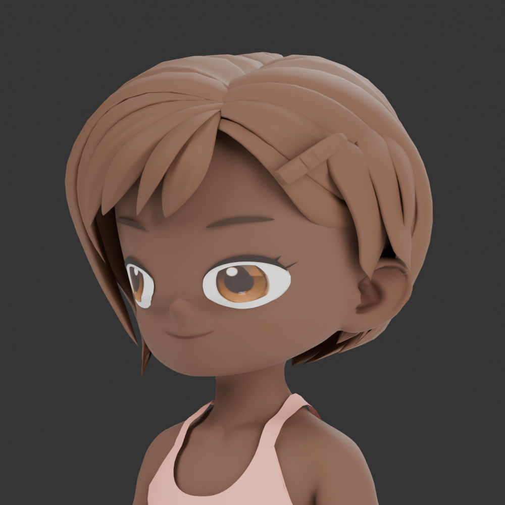
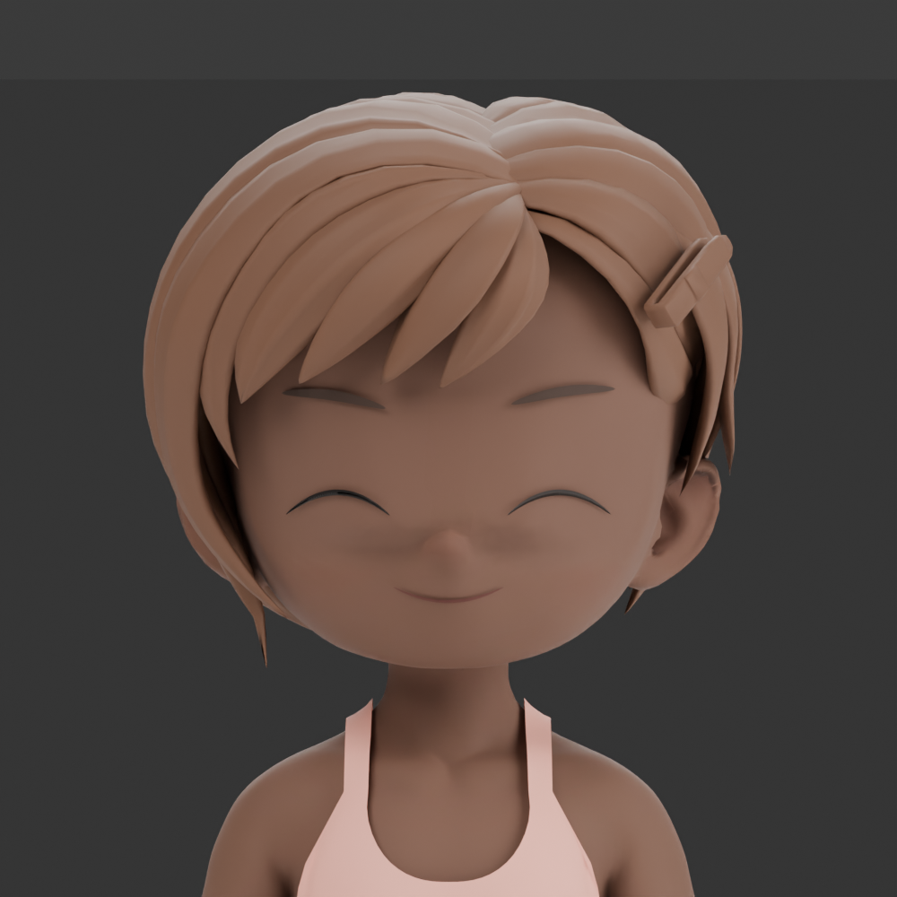
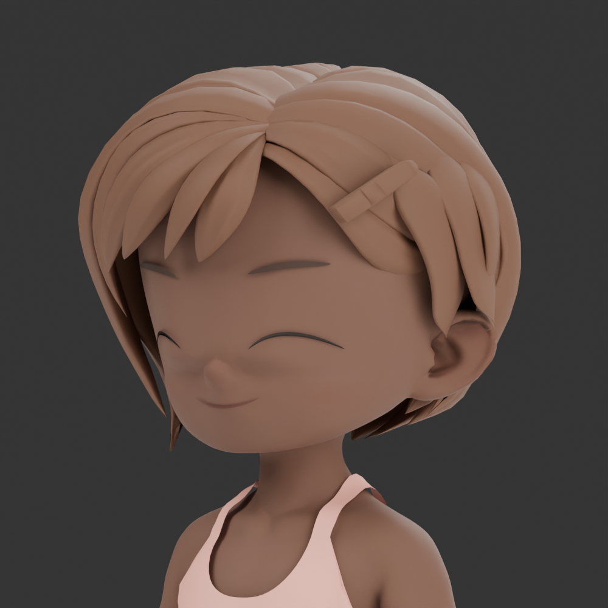
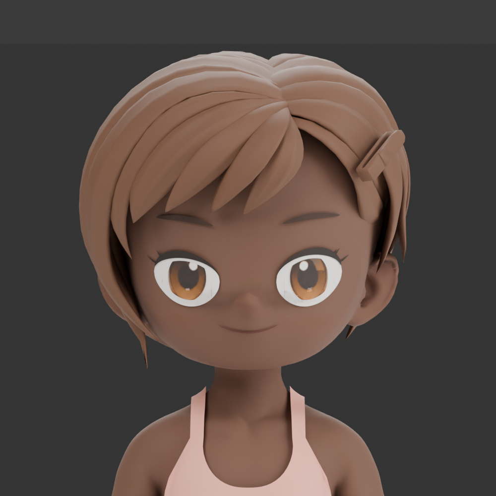

Переносица: выравнивание глубины
Исправлена область между внутренними уголками глаз, включая обе боковые борозды. Авторская примерка; установленный гардероб ещё не изменён.
До — спередиПосле — спереди
До — три четверти
После — три четверти

Закрытые глаза — спереди
Закрытые глаза — три четверти
Широко открытые глаза — спередиШироко открытые глаза — три четвертиИсходники и воспроизведение · GLB лица · Проверки